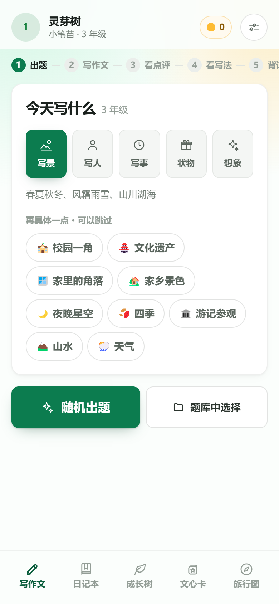
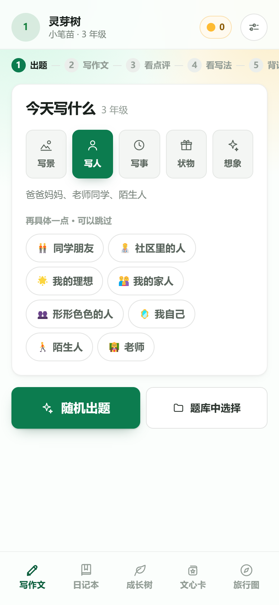
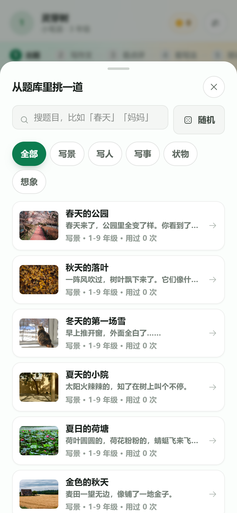
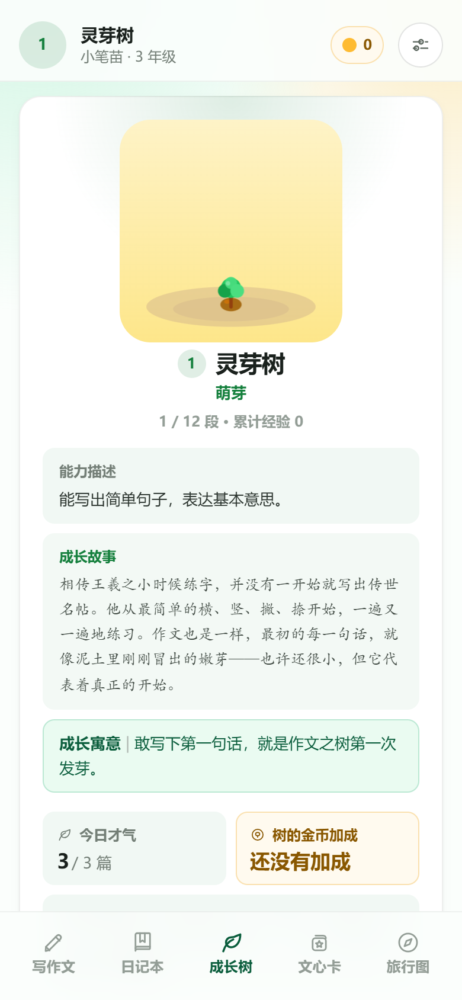
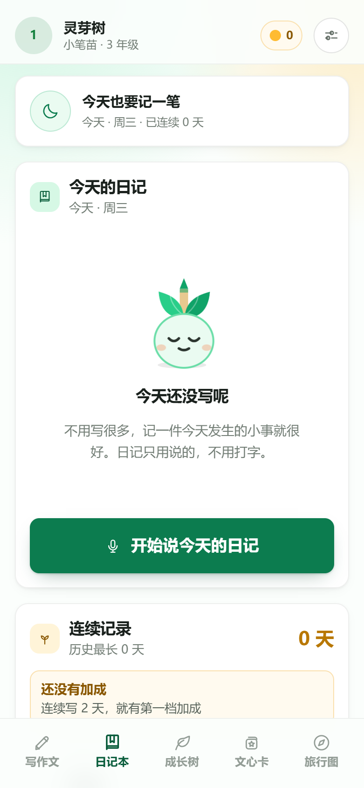
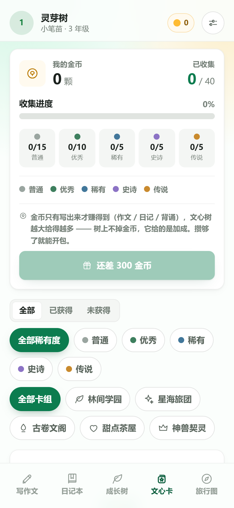
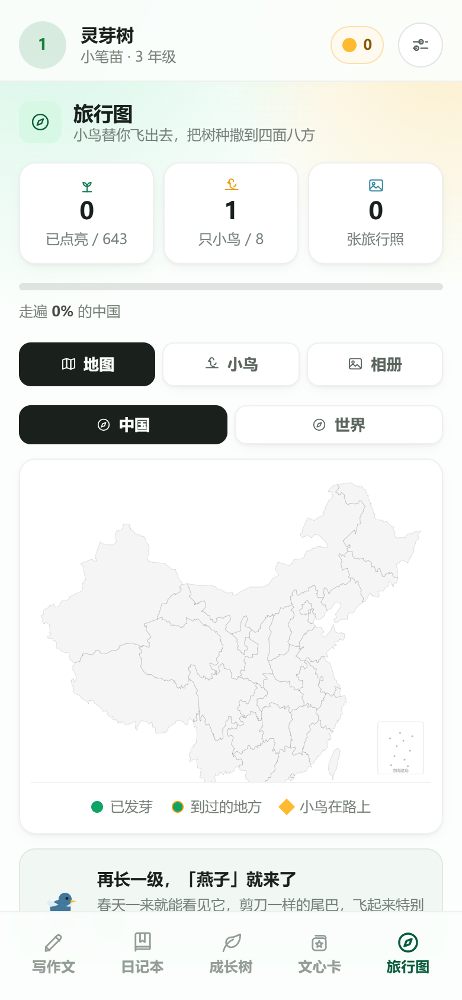

🪄
轻松起步
打开就是一张图和一句引子，不用对着空白页发呆。实在不会写？按住麦克风说出来，语音自动变成文字——起笔这件事，先变得不费劲。
看图起笔语音说作文随机出题
孩子怕作文，多半不是不会写，而是不知道从哪一句开始。这三件事，是专门为「让他先动起来」设计的。
打开就是一张图和一句引子，不用对着空白页发呆。实在不会写？按住麦克风说出来，语音自动变成文字——起笔这件事，先变得不费劲。
5 大类、42 个细标签，想练「写景」就只出写景题。同一类连着练几篇，比漫无目的地写十篇都管用——弱点在哪里，就补哪里。
带密码锁的日记本，只属于孩子自己。日记不评分数、只找亮点，评语格外温柔——因为它要养成的是「愿意写」，而不是「写得对」。
没有排行榜、没有广告弹窗、没有逼你付费的关卡。只有「出题 — 写 — 被看见」这一件事，被认真做了一遍。
写景 · 写人 · 写事 · 状物 · 想象 五大类，42 个细标签。每道题都配了图，也标好了适合的年级。
不会打字也能写作文。按住麦克风把想到的说出来，松开就变成文字；说错了，可以只改那一句。
观察力 · 条理性 · 词汇量 · 想象力 · 真情实感。不只给一个分数，每条都说清好在哪、下次怎么改。
从一颗「灵芽树」慢慢长到「通天神树」。经验值只跟写作和日记有关，坚持写就能看见自己的树在长。
643 个中国地标加世界地标，写作攒下的旅行币可以出发，拍照、听故事、收集相册。
用金币抽卡，从「普通」到「传说」共 40 张。孩子写完一篇，就离下一张更近一点。
四位密码只有孩子知道。日记重在「愿意写」，所以点评格外温柔、多肯定、少挑刺。
每一篇都会挑出用得好的词句存起来，随时能翻出来读一读、背一背，慢慢变成自己的。
一键导出备份到电脑或网盘；题库也能导出成 JSON——想自己给孩子加题，随时可以。
每一步都只做一件事。孩子不需要理解「作文方法」，他只需要点下一步。
选大类、选细标签，或直接点「随机出题」，一秒拿到一道带图的题。
看图说话，按住麦克风说，松开就成文字；写完可以自己再读一遍改一改。
五个维度给分，每条都说清好在哪、下次怎么改——而不是只丢一个分数。
同一道题给一篇参考写法，只讲思路和好词，绝不让孩子照着抄。
把这篇里用得好的词句存起来，随时翻出来读一读、背一背。
点评只描述和引导，绝不给出可以照抄的句子。 「改作文」也只在孩子自己写的那句话上改，不许凭空加字、不许替他编情节。 作文里每一个字，都必须是孩子自己想的。
12 个段位不是装饰——经验值只来自写作和日记，孩子写下的每一篇，都会让他的树高一点。
← 左右滑动看完整 12 段 →
下面每一张都是产品里的真实界面。孩子看到的，和您在这里看到的，是同一个。







← 左右滑动看更多 →
安卓直接装 APK；iPhone 和电脑用浏览器打开网页版即可。完全免费，没有账号，没有广告。